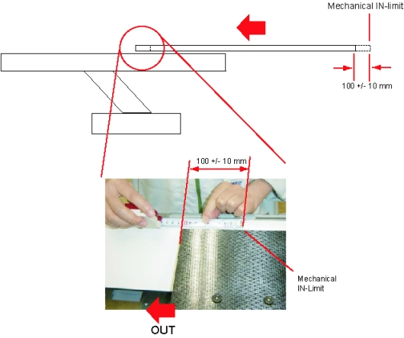

| NOTE: | If the cradle cannot be moved to the mechanical IN-limit position, move the cradle to 100 +/- 10 mm OUT from the IN-limit position you can move. The cradle characterization will be complete when a distance between the two points for characterization is more than 1000 mm. |
Illustration 3: Position near Mechanical IN-limit
